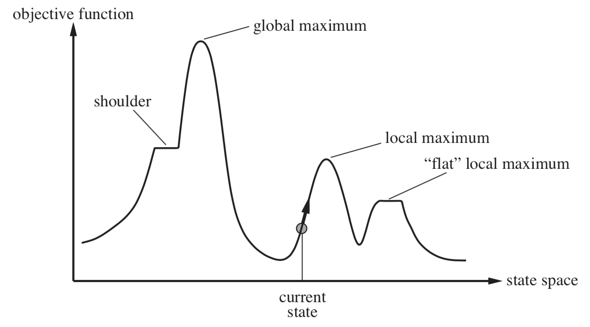
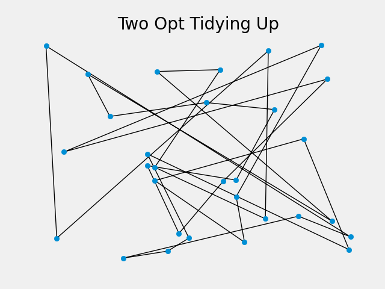
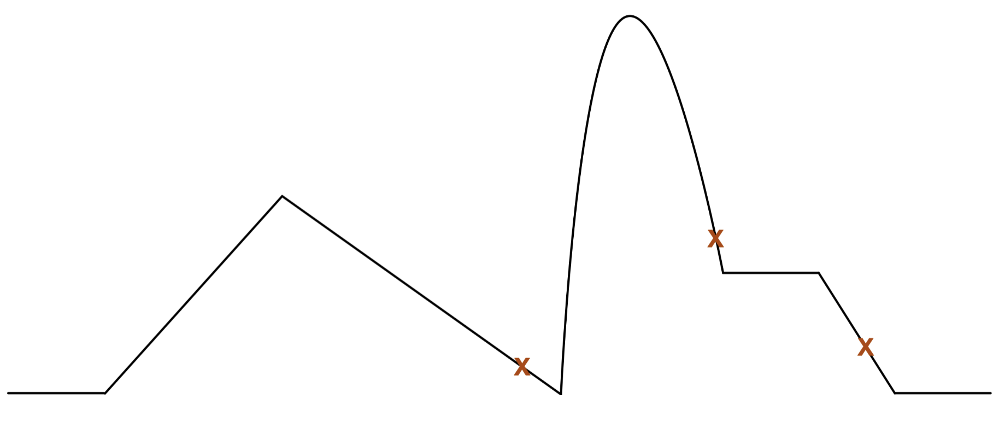
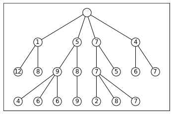
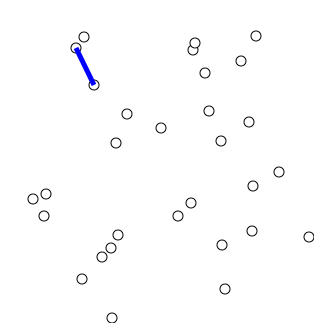
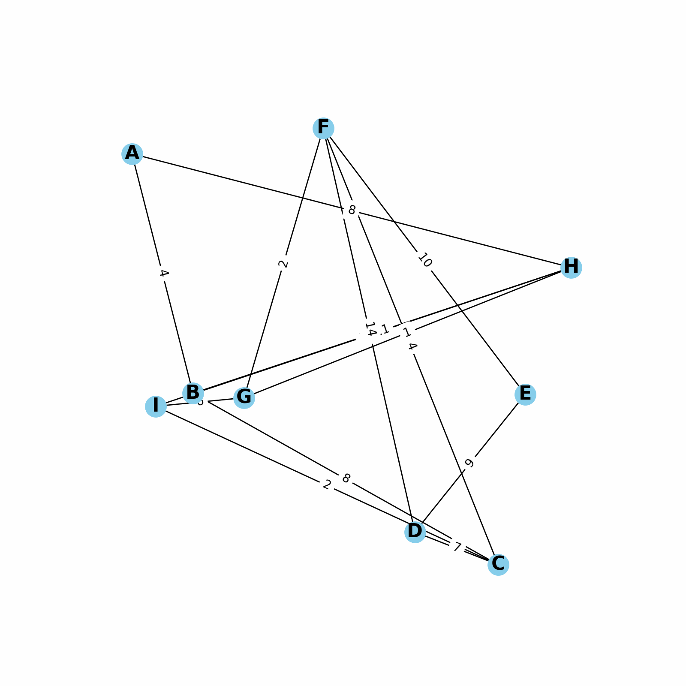
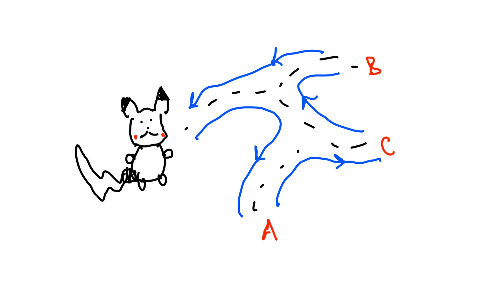

Pikachu is reading a map. He is trying to find the shortest path to Johto while visiting all the cities along the way. At the end Pikachu needs to return home to Kanto. Pikachu hates wasting time so he wants the shortest route. He is like a travelling salesman without the salesman. How does he do this? We can use classical TSP algorithms.
There are $n$ cities. Between any 2 cities, there is a distance $d(c_i, c_j)$. Find the shortest path that visits every city and returns to the starting city.

Find 2 random cities. Swap them. Does it improve our shortest path? Keep repeating until we see no improvement.
$$ \begin{array}{l} \mathbf{define}\; better\_neighbor(s): \\[4pt] \qquad \begin{aligned} &improvement = 0 \\[4pt] &\mathbf{for}\; i\;\text{in}\; [0, \ldots, n-3]: \\[4pt] &\qquad p_i = s[i] \\[4pt] &\qquad \mathbf{for}\; j\;\text{in}\; [i+2, \ldots, n-1]: \\[4pt] &\qquad\qquad p_{i+} = s[i+1] \\[4pt] &\qquad\qquad p_j = s[j] \\[4pt] &\qquad\qquad p_{j+} = s[(j+1)\;\text{mod}\; n] \\[4pt] &\qquad\qquad old = d(p_i, p_{i+}) + d(p_j, p_{j+}) \\[4pt] &\qquad\qquad new = d(p_i, p_j) + d(p_{i+}, p_{j+}) \\[4pt] &\qquad\qquad \mathbf{if}\; new < old: \\[4pt] &\qquad\qquad\qquad reverse(s, i+1, j) \\[4pt] &\qquad\qquad\qquad improvement = improvement + (old - new) \\[4pt] &\mathbf{return}\; improvement \end{aligned} \end{array} $$

Instead of picking 1 random circuit, let's pick $n$ random circuits and perform 2 opt on them. We'll take the shortest path from all these circuits.
$$ \begin{array}{l} \mathbf{define}\; random\_restarts(n): \\[4pt] \qquad \begin{aligned} &shortest\_dist = \infty \\[4pt] &shortest\_circuit = \text{None} \\[4pt] &\mathbf{for}\; k\;\text{in}\; [1, \ldots, n]: \\[4pt] &\qquad circuit = \text{random\_starting\_circuit}() \\[4pt] &\qquad \mathbf{while}\; better\_neighbor(circuit) > 0:\\[4pt] &\qquad\qquad \text{continue improving } circuit \\[4pt] &\qquad dist = \text{circuit\_distance}(circuit) \\[4pt] &\qquad \mathbf{if}\; dist < shortest\_dist: \\[4pt] &\qquad\qquad shortest\_dist = dist \\[4pt] &\qquad\qquad shortest\_circuit = circuit \\[4pt] &\mathbf{return}\; shortest\_circuit \end{aligned} \end{array} $$

Another way to get the shortest path and not get stuck in a local min / max is annealing. This means that during 2opt, we occasionally do bad swaps (if chance we accept is greater than a random probability). This can help us avoid a local optimum.
$$ \begin{array}{l} \mathbf{define}\; simulated\_annealing(s_0, c, k_{\max}): \\[4pt] \qquad \begin{aligned} &s = s_0 \\[4pt] &g = \text{Cost}(s_0) \\[4pt] &\mathbf{for}\; k\;\text{in}\; [1, \ldots, k_{\max}]: \\[4pt] &\qquad s' = \text{neighbor}(s) \\[4pt] &\qquad g' = \text{Cost}(s') \\[4pt] &\qquad \mathbf{if}\; g' < g: \\[4pt] &\qquad\qquad s = s',\; g = g' \\[4pt] &\qquad \mathbf{else}: \\[4pt] &\qquad\qquad T = c\left(1 - \frac{k}{k_{\max}+1}\right) \\[4pt] &\qquad\qquad p = e^{(g-g')/T} \\[4pt] &\qquad\qquad \mathbf{if}\; p > \text{random}(): \\[4pt] &\qquad\qquad\qquad s = s',\; g = g' \\[4pt] &\mathbf{return}\; s \end{aligned} \end{array} $$
Earlier, hill climb picked the best neighbor. Thus, we did beam search with $n = 1$. Now, we want to not tunnel vision on that sole best neighbor to avoid a local optimum. We can keep a top $n$. This is shown in NLP. We often keep the top $n$ most probable words so that we have more options.

Similar idea to survival of the fittest. We will breed, mutate, and cull causing "evolution".
The goal is to explore many possible solutions while slowly pushing the population toward better ones.
Finding good representations is hard
Lots of hyperparameter tuning:
In all these, we explore every possible solution. However, to cap this, we can use branch and bound. We can use minimum spanning tree (MST) algorithms to provide a lower bound and upper bound. We do not need to visit the branches whose lower bound is already better than the best upper bound. In other words, in the best case, this branch is worse than a solution we already found. $$ LB(branch) \ge UB_{best} \Rightarrow \text{prune} $$
$2 \cdot MST$ gaurantees a valid TSP tour. This is because the MST guarantees we visit every node. $2 \cdot MST$ means we can walk back to the beginning.

Choose random vertex, connect closest points until we get a MST:
$$ \begin{array}{l} \mathbf{define}\; prims(S): \\[4pt] \qquad \begin{aligned} &\text{Given } S = \{c_1, \ldots, c_n\} \\[4pt] &v = \text{pop}(S) \\[4pt] &C = \text{PriorityQueue},\; Closest = \text{Map} \\[4pt] &\mathbf{for\ all}\; s \in S: \\[4pt] &\qquad C.\text{add}(s, d(s, v)) \\[4pt] &\qquad Closest[s] = v \\[4pt] &Result = \text{new Set} \\[4pt] &\mathbf{while}\; S\;\text{is not empty}: \\[4pt] &\qquad u = \text{pop\_least}(C) \\[4pt] &\qquad S.\text{remove}(u) \\[4pt] &\qquad Result.\text{add}(u, Closest[u]) \\[4pt] &\qquad \mathbf{for\ all}\; w \in S: \\[4pt] &\qquad\qquad C.\text{decrease}(w, d(w, u)) \\[4pt] &\mathbf{return}\; Result \end{aligned} \end{array} $$

Keep connecting the shortest distances until we get a MST:
$$ \begin{array}{l} \mathbf{define}\; kruskals(S): \\[4pt] \qquad \begin{aligned} &\text{Given } S = \{c_1, \ldots, c_n\} \\[4pt] &E = \text{all possible edges using } S \\[4pt] &E = \text{sort\_ascending}(E) \\[4pt] &Result = \text{new Set} \\[4pt] &\text{Create a set } S_i \text{ for each } c_i \\[4pt] &\mathbf{while}\; \text{there is more than one set}: \\[4pt] &\qquad (u, v) = \text{pop\_least}(E) \\[4pt] &\qquad \mathbf{if}\; u\;\text{and}\; v\;\text{are not in same set}: \\[4pt] &\qquad\qquad \text{Merge the two sets} \\[4pt] &\qquad\qquad Result.\text{add}(u, v) \\[4pt] &\mathbf{return}\; Result \end{aligned} \end{array} $$
| Algorithm | Main Idea | Pros | Cons | Best Use Case |
|---|---|---|---|---|
| Hill Climbing | Always move to the best better neighbor. | Simple, fast, easy to implement. | Gets stuck in local minima/maxima. No randomness or backup plan. | When the search space is smooth and local choices are usually good. |
| Random Restart | Run hill climbing many times from different random starts. | Better chance of escaping local minima. Still simple. | Can waste time restarting. No smart memory between runs. | When hill climbing works sometimes, but depends heavily on the start. |
| Simulated Annealing | Usually take good moves, but sometimes accept bad moves. | Can escape local minima. Balances exploration and exploitation. | Needs a temperature schedule. Can be slow or random if tuned badly. | When you need to escape traps but still want mostly greedy behavior. |
| Beam Search | Keep the best n candidate solutions each round. | Less risky than hill climbing. Searches multiple paths at once. | Uses more memory. Can still lose good paths if beam width is too small. | When one path is too risky, but full search is too expensive. |
Pikachu can now find the shortest path from Kanto to Johto and back without wasting time. How? He used one of the algorithms above!

{kind=link}